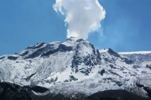
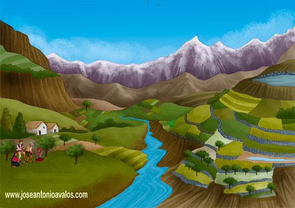
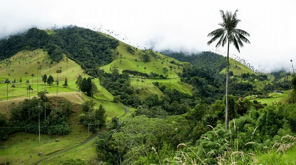

Altoandino : El Altiplano está rodeado por la cordillera de los Andes. Esta cadena montañosa
se formó por movimientos de la Tierra y volcanes
Bosque Andino: Son bosques lluviosos, con mucha niebla y temperaturas variadas, desde templadas hasta frías.
El Volcán Nevado del Ruiz, también conocido como la Mesa de Herveo, es un volcán activo en Colombia.
Se encuentra en la Cordillera Central de los Andes, entre los departamentos de Tolima y Caldas.